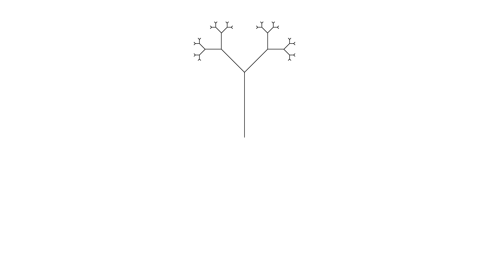
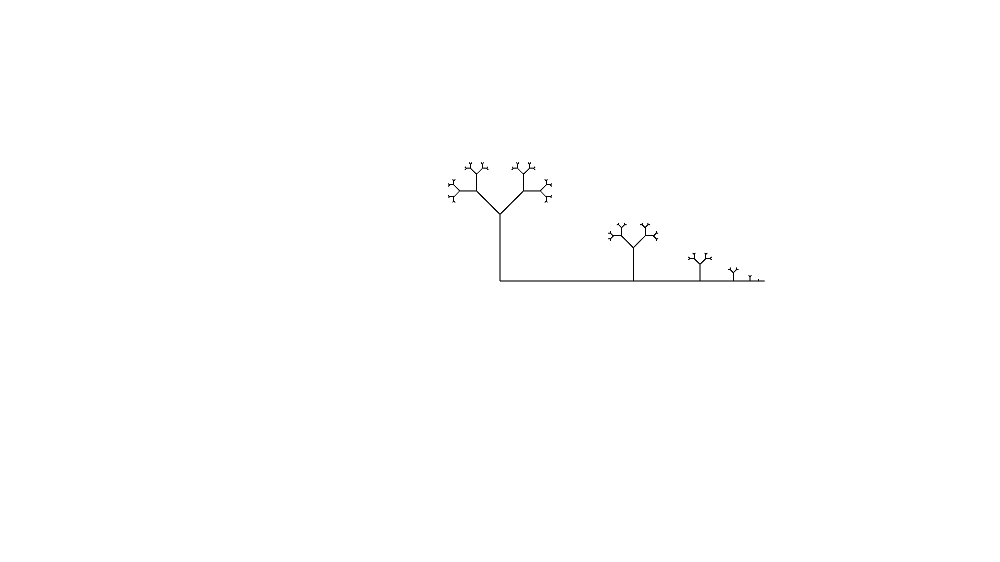
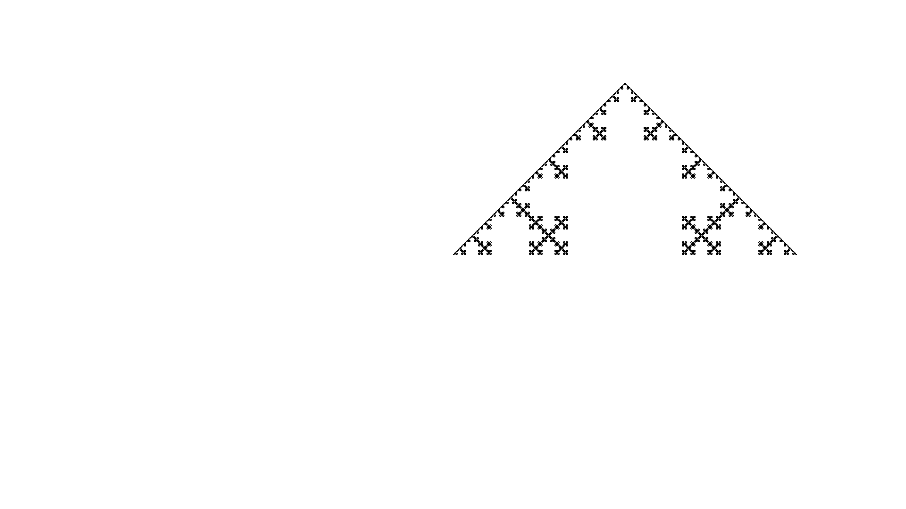
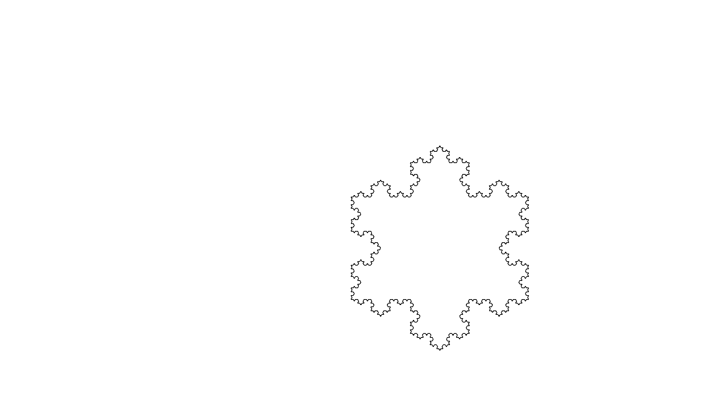
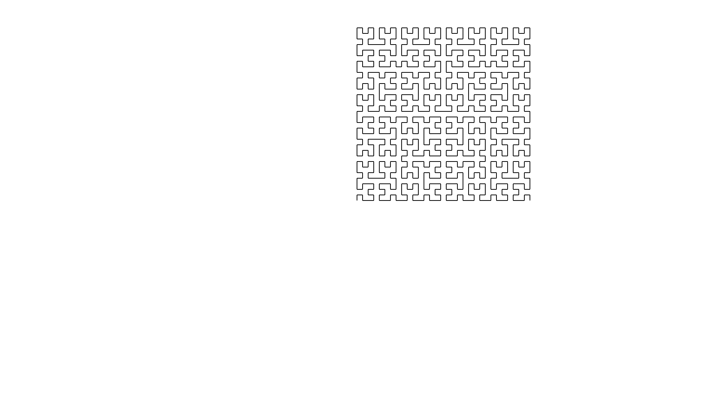

Introduction
This book is a compendium to the L-systems workshop.
This book and the workshop will introduce you to L-systems, allowing you to play and understand them.
Understanding means that you get the opportunity to create a program that reads, evaluates and renders an L-system. We will start from scratch and teach you all the necessary tools and techniques to finish.
This book serves as a guide during your journey. A trusty companion that cheers you on, helps you when you are stuck and can turn to when your motivation is low.
Not at a workshop?
This book is written to be self contained. The only downside of not being in a workshop is missing the ability to ask questions and getting a quick answer.
There still is the ability to ask questions, it might just take some time before we can answer them. Try one of the following means of communication
Outline
There are various ways of learning and we want to enable you to choose your path through the material. Below you can find the main sections that we will address during this workshop.
It is possible to progress through the sections in any order you want. We have setup things in such a way that you can rely on our code so long as yours is not ready.
L-systems
This section teaches you what L-systems are, trains you how to create them, and allows you to play with them.
Describing a L-system is one thing. Teaching a computer how to work with L-systems is another. The next sections are major parts in the software that allows you to explore L-systems.
Parser
A parser is a
software component that takes input data (frequently text) and builds a data structure – often some kind of parse tree, abstract syntax tree or other hierarchical structure, giving a structural representation of the input while checking for correct syntax.
This section focuses on parsing a L-system. We do this by creating our own Parser Combinator framework that we use to read an L-system and turn it into a data structure that we can use.
Interpreter
Once you have defined an L-system, you probably would like to do something with it. The interpreter helps with this goal. It diligently executes the instructions described by the L-system informing interested parties what has happened.
The interpreter is the workhorse of our program. Although it is the centerpiece of our software, it is a quit simple machine.
Renderer
An L-system without a "picture" is as a Christmas tree without decorations. It still is instructive, but is sure isn't as much fun.
In this section we explore various way of make a "picture" for our L-system. There are various ways of turning the L-system into meaningful artifact. Making an image is surely not the only one.
L-system
This section teaches you all about what L-systems are.
Read about Aristid Lindenmayer and why he invented his system. Explore the rich language and it's beautiful images.
Aristid Lindenmayer
Aristid Lindenmayer was a Hungarian biologist. He lived from 1925 until 1989. He studied biology and chemistry at the university of Budapest. Lindenmayer got his Ph.D. from the University of Michigan before accepting a position as professor in Philosophy of Life Sciences and Biology at the University of Utrecht.

Algae
Aristid Lindenmayer introduces a system of substitutions that would later bear his name. He did this in a set of two articles; Mathematical Models for Cellular Interactions in Development. As the title implies it offers a mathematical theory to model growth in certain type of cells. Stripping away the mathematics his article described an example that modeled algae. A more modern description follows below.
We will study words, i.e. a sequence of symbols, over an alphabet. In our example we take our alphabet to be the symbols A, and B. We will examine a series of words. In the algae example we are starting with the word A, it is our axiom. With the current word in the series, we replace each symbol with a sequence of symbols and concatenating the sub-sequences in a new word. In our example we will replace each occurring symbol A with the sequence AB, and each occurring symbol B with the sequence A.
Below you find the first few iterations of this process.
- A, our starting word.
- AB, because the single A is replaced with AB.
- ABA, because the single A is replaced with AB and the B is replaced with A.
- ABAAB, because each A is replaced with AB and each B is replaced with A.
In the above model the symbol A is a model for a mature cell, ready to divide itself. The division however is asymmetric. It allows the original cell to comfortable remain in place, making place for a young cell B. In its stead, the young cell B first must mature to and become an A cell before it can start reproducing itself.
Although this is a simple model. A lot can be learned from this. For an few examples, see the exercises.
Exercises
- Extend the example with the a few iterations.
- Count the number of symbols in each word of the series. Guess what number comes next.
- Count the number of A's and the number of B's separately. What do you get.
- We will number the words in our series, \(W_{0}\) for our start word, \(W_{1}\), for the next, \(W_{2}\) for the one after that, etcetera. Pick any number, let's say 4. Notice how \(W_{4}\), i.e. ABAAB is the concatenation of ABA, which is \(W_{3}\), and AB, which is \(W_{2}\). In other words \(W_{4}=W_{3}W_{2}\).
- Check if something similar holds for \(W_{3}\) and \(W_{5}\).
- Does this property, i.e. \(W_{k} = W_{k-1}W_{k-2}\) always hold?
- The above properties remind us of the Fibonacci sequence. For the Fibonacci sequence there is a formula that instantly calculates the the value in the sequences. Robert Dimartino found out that a similar property holds for our words. Search for Fibonacci word for more information.
algae.ls
Take a look at the systems/algae.ls file. For convenience it is reproduced
here
config:
step = 100
angle = 45
rules:
axiom = A
A => AB
B => A
Does this look familiar?
Rules
Take a closer look at the rules section. It defines an axiom just as in the
preceding chapter.
Furthermore it defines two rules. The first rule A => AB tells us to replace
every symbol A with its production AB. The last rule B => A tells us to
replace each symbol B with the production A.
This is exactly like the rules in the preceding chapter.
cargo run
Go into the code directory and run the following command
cargo run -- -f system/algae.ls -n 0
It should respond with A. Below the sequence of words generated by the
L-system from the preceding chapter is reproduced.
- A
- AB
- ABA
- ABAAB
Change the -n parameter in the call to cargo run and check if it corresponds
with the above sequence.
Exercices
- Check other values for the number of iterations.
- check out
cargo run -- --help.
koch.ls
You may have noticed a different L-system in the system directory. I.e.
koch.ls. It is reproduced here for convenience.
config:
step = 5
angle = 60
rules:
axiom = F
F => F-F++F-F
Use this L-system in the cargo run command, and try to predict the answers.
A picture is worth a thousand words
L-systems would still be worthwhile if the output is only a sequence of symbols. But it really shines when these symbols are interpreted as a description of a image.
Let's make that possible. Open the src/main.rsfile. You don't need to
understand any of this, we will explain all of it during this workshop.
There are a few comments instructing to uncomment certain lines to use the crab renderer, what ever that should be. Do that now and then run the following command
cargo run -- -f system/koch.ls -n 4
Exercises
- Iterate the words for the
koch.lsL-system by hand for a few values. - Run the same command with different number of iterations.
config
While playing with different number of iterations for the Koch L-system. You probably noticed that sometimes the image would be drawn outside the borders of the screen.
For example, the command
cargo run -- -f system/koch.ls -n 5
Will result in a picture similar to the one below.

The config section in koch.ls will be enable us to remedy that.
step
The config section has a number of key value pairs. One of them is step. This
controls how big the line segment is whenever line segment is drawn. When you
change it to 2 and run the the command above, we will capture the Koch curve
inside the window.

angle
There is an other option you can configure. I.e. angle. This determines the
number of degrees through which a turn is made. Change the configuration to have
a step of 30 and an angle of 80. Next run the L-system for 4 iterations.

Exercises
- Play with the configuration to produce a variety of different images.
Plant
We are going to write our own L-system. In this chapter you will go through the motions. The next chapter will explain in more detail how to rules are interpreted.
plant.ls
Create a file in the system directory called: plant.ls. This will will
contain a description of our L-system.
config
Begin with a config header. As you know this starts the configuration section
where you can configure the generation of the image. Configure the step to be
5 and the angle to be 25.
config:
step = 5
angle = 25
rules
Next comes the rules section which is started with a rules header. The first
thing in a rules section should be the axiom. Make this to be --X.
The axiom is followed by a number of rules. For this L-system there are two. One
rule that tells us to transform F into FF. The other rule tells us to
transform X into F-[[X]+X]+F[+FX]-X.
rules:
axiom = --X
X => F-[[X]+X]+F[+FX]-X
F => FF
Execution
With the plant.ls file in place, we can admire our work by executing the
command
cargo run -- -f system/plant.ls -n 5

Exercises
- Create the
plant.lsfile as described in this chapter. - Play with it's configuration.
Crab graphics
You might wonder how these image are being drawn. This chapter will explain the connection between the words of the L-system and image being drawn.
Ferris the Crab
 The artist is @whoisaldeka.
The artist is @whoisaldeka.
We all know and love Ferris. But did you know that Ferris is a skilled and attentive artist. Ferris is willing to lend their skill for our workshop. By listening to our instructions they will draw an image for us.
Below are the command that Ferris responds to. Each command has a corresponding symbol that Ferris knows, understands and responds to.
Forward F
The forward command will make Ferris take a step forward, leaving a line in
their trail. The step size is determined by the step value of the
configuration.
TurnLeft -
When the turn left command is issued Ferris will change heading accordingly. The
angle through which Ferris will turn is configured with the angle value of the
configuration.
TurnRight +
Correspondingly, Ferris knows about how to turn right.
Push [
Not only is Ferris a great artist, they have excellent memory. With the push command Ferris will remember their position and heading so that they are able to come back to it at a later time, i.e. when the corresponding pop command is issued.
Pop ]
What would push be without a pop? Ferris agrees and will respond to the pop command by remembering position and heading from the corresponding push command. Push and pop commands should properly match. Just like the brackets used to represents the commands.
Any other symbol
Any other symbol besides the ones described above will be ignored by Ferris. That does not mean that they aren't important. For they can help in constructing more complex drawings.
Synthesis
L-systems are like a brush that allow you to paint beautiful forms. But like any form of art it takes practice to become proficient. This chapter will allow you to take a peek behind the curtain. It will provide a few hints and tips when trying to create an L-system to resemble an image.
Target image

Look at the above image. How would an L-system look like that would recreate that image?
Configuration
Step
Step is less critical for the image so any starting value that allows you to see forwards clearly will do. Usually I settle on 30 and work from there
Angle
Take a look at some of the angles in the image. The angle between the main trunk and the first branches seems to be 45 degrees. Looking at other junctions the angle of 45 degrees seems to be found a lot.
Keep in mind that the configuration could have a different angle configured. It is only necessary that a series of plusses or minusses can create an angle of 45 degrees. E.g. an angle of 90 degrees can be made with an base angle of 45 by turning twice in a row.
L-system file
Start a file tree.ls in the system directory. We can already provide one of
the sections
config:
step = 30
angle = 45
Rules
Axiom
Ferris the crab will start heading to the right. Since the main trunk grows upward we need to first orient Ferris before they can start drawing. Luckily 90 is a multiple of 45 so two left turns will start us off right away.
To get some feedback if we are on the right track we could add the rules section and the following axiom.
rules:
axiom = --F
Execute cargo run -- -f system/tree.ls -n 0 to see a mighty trunk.
Rules
When we focus on the rules and look at the tree, we notice that from the trunk two branches sprout. Since Ferris can't lift the pen from the paper, we know from the junction that we need to branch.
Let's try our hand. After each forward we will split in two. In one part we turn left and sprout an new tree. In the other part we turn right and sprout a new tree. After a moments thought we might come up with the following rule.
F => F[-F][+F]
Add the rule to the L-system and run it to see the result. Don't forget to change the number of iterations.
Lengthening the stems
Seeing the image being drawn be Ferris, we notice that the structure is correct, but the length of the stems are off. Taking a closer look the stems seem to grow shorter for each new branch.
Thinking about this some more, this would occur naturally if each forward step would change into two ore more forwards step with each iteration. That would suggest
F => FF
Since we already used F we need to introduce a new symbol. Let's settle on S
which will stand for seed.
The axiom needs to change into --S, i.e. change orientation and plant a seed.
Next, each seed will grow into a stem and sprout two new seeds, both growing in
a different direction. I.e. S => F[-S][+S].
Lastly during each iteration the stems need to grow, which corresponds to the
F => FF rule.
Change the rules and check the result.
Optimization
We have successfully recreated the image. But there is an optimization that
could be performed. Think about the second pair of brackets in the
S => F[-S][+S] rule.
We use a pair of brackets to return to the exact state Ferris was in when we opened the bracket upon closing the bracket pair. We usually do this because we want to draw something else from that location. But we aren't drawing anything after the second branch.
Check that S => F[-S]+S results in the same image.
Exercises
- Walk through this chapter and recreate the image.
- If you would want to delay the growth of the stems, how would you do that?
Exposé
Below you find a few images created from L-systems. It is your job to try to recreate them. This way you get a feeling for how L-systems can be used to recreate images.
before you start, Take a look at the exercises. They might provide a hint.
Tree
Perspective

Square
Sqoch

Koch Island

Hilbert Curve

Exercises
- What image corresponds with the L-system below. Try to make an educated guess before verifying your claim.
config:
step = 100
angle = 90
rules:
axiom = Q
Q => A+A
A => S+S
S => F
- Try to create L-systems that recreate the images in this chapter.
Have fun
It is time to have fun and design and render your own L-systems. Feel free to share your work and amaze us with your splendid L-systems.
Exercises
- Have fun.
Overview
This section will provide an overview of the scaffolding of the project. We have provided an command line interface you already used. That makes use of an api. Read all about how these interact.
Command Line Interface
The entrypoint to our program is a good place to start, so that we can get a sense for how all the pieces will fit together. The interface we're looking for is something like this:
l-system -f <l-system-file> -n <iterations>
We need a few main pieces in order to render an l-system. First is a file containing the description of our l-system. This will have the rules for symbol replacements, defines the axiom and it will also contain some starting configuration for our renderer. Lastly we have the number of iterations, which is the number of times that we should apply the token substitution rules.
The main function should parse these arguments, parse the l-system described
in the file, then get the final productions and pass them to the renderer as
individual instructions. Once that is complete, it should call finalize on the
renderer.
api Module
In this section we describe the api that is provided that forms the tapestries onto we weave our application.
It is good to keep in mind that we are working toward a Crab renderer. I.e. a turtle graphics capable ferris that responds to our commands.
RenderConfig
#[derive(Debug, PartialEq)]
pub struct RenderConfig {
pub step: u16,
pub angle: u16,
}
The RenderConfig is used to configure the Crab renderer. step refers to the
distance the Crab will travel when stepping forward. angle refers to the
number of degrees the Crab will turn when we ask her to. This is what you'll parse from the l-system file.
RenderInstruction
We define this enum just to give us a simple way to represent what we want our Renderer to do. Our basic definition looks like this:
# #![allow(unused_variables)] #fn main() { #[derive(Debug, PartialEq, Eq)] pub enum RendererInstruction { Forward, RotateLeft, RotateRight, Push, Pop, NoOp, } #}
This is a fairly minimal instruction set, but you can still do a lot with it. More full-featured L-system implementations may have more instructions, but we'll start simple for now.
Symbol
The heart of any L-system is Symbols. It is, afterall, a symbol substitution language. Symbol is defined as a trait with a few simple properties. First, it must implement Eq and Hash since we will need to compare them and potentially store them in a hashmap. Secondly, it must implement Copy to facilitate easily producing Symbols based on the rules in our L-system. Lastly, we want it to also implement Display so that we can produce a nicer output when debugging. For this workshop we'll use char, since it already implements all of those traits.
A Symbol must also implement the function fn to_rendering_instruction(&self) -> RendererInstruction;. This function maps each Symbol to an instruction for our renderer to execute. One important bit to point out is that our RendererInstruction enum includes a NoOp instruction, which instructs our Renderer to do nothing. We define this instruction so that it's clear when a Symbol does not map to any particular RendererInstruction. There are way more valid char values than there are RendererInstruction variants, so we need a clear way to represent the case when a Symbol is only used for matching substitutions.
For our workshop, the mapping between char values and rendering instructions will be hard coded as part of the Symbol::to_rendering_instruction function. This mapping follows a fairly common convention, but other implementations will handle this differently. Some implementations even allow you do define this mapping yourself, but we'll leave all that for extra credit.
Rule
The L-system file will contain a rules: section that has one or more rules for symbol replacement. In our API we'll represent each rule as a struct containing the Symbol to match and a Vec<Symbol> of replacements to produce. For example, the rule F => F+F--F+F would be represented by:
# #![allow(unused_variables)] #fn main() { Rule { match_input: 'F', productions: vec!['F', '+', 'F', '-', '-', 'F', '+', 'F'], } #}
LSystemRules
Once we have all the Rules parsed, we'll represent the complete set of rules as a HashMap<char, Vec<char>> where the keys are the Symbols to match and the values are the productions for that symbol. This just facilitates easy lookups.
LSystem
This struct is just a holder for the complete set of data that's been parsed from an l-system file. This represents almost everything we need in order to render the final image. The only additional piece we'll need is the number of iterations, but we pass that as a command line argument.
Parser
In the L-system section you have had the opportunity to learn about and play with Lindenmayer systems. The Parser section starts our journey of creating our own software to explore L-systems.
The journey starts with teaching the computer about .ls files and what we
describe with them.
Make sure to look in to working with dependencies to find out how to incorporate your code into the project.
What is a Parser?
A parser is a
software component that takes input data (frequently text) and builds a data structure – often some kind of parse tree, abstract syntax tree or other hierarchical structure, giving a structural representation of the input while checking for correct syntax.
In our case we want to teach the computer to understand .ls files. This is our
input data. Although this input is convenient for us, it is just a sequences of
bytes to a computer.
What we want is an L-system that we can manipulate. That is our data structure. Parsing is what brings us from our input data to our L-system.
Parser framework
We will be building our own Parser framework. I.e. we will build the
infrastructure that allows us to create a custom parser. We will use our
framework to create a specific parser that reads in our .ls files and create
the L-system for us.
Parser Combinator
Our framework will be based on the concept of Parser Combinators. A Parser Combinator is a
higher-order function that accepts several parsers as input and returns a new parser as its output. In this context, a parser is a function accepting strings as input and returning some structure as output, typically a parse tree or a set of indices representing locations in the string where parsing stopped successfully.
If this does not really makes sense to you. Keep reading and soon you will be an expert Parser Combinatorist.
Looking at the type
Before we start out it is good to think what we want to achieve. This allows us to reason about the constraints and capture those in our types.
A parser reads input and transforms that into some data structure. This already provides us with a decision. I.e. what type is our input?
We want to make things easy for our selves and since string literals have type
&str we our going to pick that as our input type.
We don't really know what output type is going to be, put we do know that the parser could fail. Take a look at the following code
F -> FF
Although it looks like an L-system, it not quite an L-system. At least not in the form we expect in the L-system section. The arrow is wrong!
Because the data-structure could be anything, we better make it a generic
parameter. So our first guess for the output type could be
Result<T, ParserError>, where ParserError is defined as
# #![allow(unused_variables)] #fn main() { #[derive(Debug, PartialEq)] pub enum ParseError { GenericError, } #}
Combinator
Although our first guess isn't that far off, it is lacking some flexibility. What we like to achieve is to easily combine different kind of parsers into a more complex one.
With this goal in mind, we would like to pass information about what part of the
input still needs parsing. Because we want to feed that into a different parser,
that type should be &str, our input type.
So our second guess is Result<(T, &str), ParseError>.
A Parser returns either a tuple of the parsed result and the rest of the input, or it returns an error.
Trait
We now can create a trait that describes the contract our parsers have. It is
little more than our consideration, with the correct use of lifetimes to keep
the compiler happy.
# #![allow(unused_variables)] #fn main() { pub trait Parser<'a, T> { fn parse(&self, input: &'a str) -> Result<(T, &'a str), ParseError>; } #}
So a Parser is anything that has a parse method of the right signature.
Exercises
- Implement the
Parsertrait and theParseErrorenum insrc/framework.rs.
Functions are Parsers!
With our Parser trait in place we can start implementing it. Thinking about
the trait one implementation springs to mind.
If we have a function, or a lambda expression for that matter, that has the
right signature. I.e. accepts a &str and returns a
Result<(T, &str), ParseError>, in some sense it is a parser. We just have to
apply the function!
Let's start with that implementation.
impl <'a, T, F> Parser<'a, T> for F where F: Fn(&'a str) -> Result<(T, &'a str), ParseError> {
fn parse(&self, input: &'a str) -> Result<(T, &'a str), ParseError> {
self(input)
}
}
Exercises
- Write the implementation of the
Parsertrait forFn(&'a str) -> Result<(T, &'a str), ParserError>.
Parsing a char
In this chapter we will spend some time explaining how to create a Parser
capable of parsing a char. We will go through all the motions and explain
all the steps.
Our goal for this chapter is to make the following test pass.
#[test]
fn parse_a_character() {
let input = "ABCD";
let parser = character('A');
let actual = parser.parse(input);
let expected = Ok(('A', "BCD"));
assert_eq!(actual, expected);
}
So let's get started.
Character
Thinking about the challenge of parsing a char one could notice the following
things. Giving a certain &str, we need to
- Check if it starts with the correct character.
- If it does, return it and the rest of the
&str. - If it does not, report an error.
In order to be able to implement the Parser trait, there first needs to be
something we can implement the Parser trait for. This thing will need to keep
track of what character to parse.
We will use a struct Character for that. We will give it a field that tracks
the intended character to match.
pub struct Character {
character_to_match: char,
}
Impl Parser
Let's implement Parser for the Character struct. We will be guided by the outline above
impl<'a> Parser<'a, char> for Character {
fn parse(&self, input: &'a str) -> Result<(char, &'a str), ParseError> {
if input.starts_with(self.character_to_match) {
Ok((self.character_to_match, &input[1..]))
} else {
Err(ParseError::ExpectingCharacter(self.character_to_match))
}
}
}
The first two lines are the signature needed to adhere to the traits contract.
Next we check if the input starts with the character to match. If it does, we
return a succesful parse with the matched character and the remaining input.
Otherwise we announce an error, which we also need to add to our ParseError
enum.
#[derive(Debug, PartialEq)]
pub enum ParseError {
GenericError,
ExpectingCharacter(char),
}
Constructor
It is convenient to create a constructor for our Character struct. This eases the
burden of creating a Character parser.
impl Character {
pub fn new<'a>(character_to_match: char) -> impl Parser<'a, char> {
Self { character_to_match }
}
}
Notice the return type of our constructor. It hides the implementation details.
It only tells you that you can expect to get something that implements a Parser
that returns a char on success.
This allows us greater flexibility in the future. We can easily change the structure of Character without changing the constructor, or code that relies on it.
Factory
An other convience is the use of a factory. A factory is a pattern that hides the details of how an struct is created. It serves yet an other purpose, to use a name that reflects the intention, instead of exposing the mechanism of construction.
So instead of writing Character::new('a'), we want to write character('a'). Under
the covers this is done by using the constructor for Character.
pub fn character<'a>(character_to_match: char) -> impl Parser<'a, char> {
Character::new(character_to_match)
}
Summary
Since the Character parser is an example of how parser can be created we are going to
summarize the steps.
- Choose a datatype that allows the parser to do it's job.
- Implement
Parserfor it. - Create a constructor.
- Create a factory.
The Character parse was build of a struct. Implementing Parser was done by translating
the parsing process into rust. And constructor and factory were created for ease of use.
Exercises
- Implement the
Characterparser. - Write some tests to check your implementation.
Parsing any char
In a previous chapter we created a parser that could parse a single specific character. An other useful parser would parse a string would start with any of a group of characters.
To be more precise. Let's say that we would like to parse a &str if
it starts with a digit. What we would like to achieve is to pass the
following test
#[test]
fn parse_any_digit() {
let input = "0123";
let parser = any(|c: char| c.is_ascii_digit());
let actual = parser.parse(input);
let expected = Ok(('0', "123"));
assert_eq!(actual, expected);
}
We will go through all the motions of creating a parser once more.
Any
We will create a struct that will contain everything it needs to make our wish come through. For this we need to be able to store a predicate, a function that will decide on the characters we expect.
pub struct Any<F> where F: Fn(char) -> bool + Sized {
predicate: F,
}
Here F is an alias for the Fn(char) -> bool + Sized type.
Our predicate, is a function that accepts a character and tells
use if it does or does not fall in our category. The Sized restriction
is necessary because we want to store it in our field.
Impl Parser
Next we our going to implement the Parser trait. The basic idea is,
given our input
- Check if it starts with a character from our category.
- If it does, return it and the rest of the input.
- If it does not, return an error.
The difference with the Character parser is that String does not have
a convenience method like starts_with that we can use. Instead we can use
an iterator over the characters of our input. See below for details.
impl<'a, F> Parser<'a, char> for Any<F> where F: Fn(char) -> bool + Sized {
fn parse(&self, input: &'a str) -> Result<(char, &'a str), ParseError> {
let character = input.chars().next();
match character {
Some(c) => {
if (self.predicate)(c) {
Ok((c, &input[1..]))
} else {
Err(ParseError::ExpectingPredicate)
}
},
None => {
Err(ParseError::EndOfInput)
}
}
}
}
We ask our input for an iterator over its characters. Match on the first character
if it exists, and if it does, check to see if it is in the category. Notice that
we introduced two new ParseErrors.
#[derive(Debug, PartialEq)]
pub enum ParseError {
GenericError,
ExpectingCharacter(char),
ExpectingPredicate,
EndOfInput,
}
Constructor and Factory
The final two steps are to create a constructor and a convenient factory.
impl<F> Any<F> where F: Fn(char) -> bool + Sized {
pub fn new(predicate: F) -> Self {
Self { predicate }
}
}
pub fn any<'a, F>(predicate: F) -> impl Parser<'a, char> where F: Fn(char) -> bool + Sized {
Any::new(predicate)
}
Summary
Just like the first parser we made, we followed a predictable course.
- Choose a datatype that allows the parser to do it's job.
- Implement
Parserfor it. - Create a constructor.
- Create a factory.
This pattern will be repeated many times.
Exercises
- Implement the
Anyparser. - Write some tests to check your implementation.
Parsing a Literal String
Often you know exactly what you are looking for. E.g. when separating the the
symbol for its production we use =>. I would come in handy if there was a
parser that could do that job.
#[test]
fn parse_literal_arrow() {
let input = "=> FF";
let parser = literal("=>");
let actual = parser.parse(input);
let expected = Ok(("=>", " FF"));
assert_eq!(actual, expected);
}
Literal
The only thing that we need to keep track of is the string that we are interested in. Rust provides various ways to model your data. Tuple structs are a convenient way for our use case. It allows one to name a structure by describing the fields in a tuple.
pub struct Literal<'p>(&'p str);
Note that we have a tuple with only one field. It does not have a name so we need to reference it by index.
Impl Parser
Parsing with a Literal amounts to the following steps
- Check if the input starts with our literal.
- If it does, chop of the parsed string and return it together with the remaining input
- If it does not, report an error.
This translate into code as follows.
impl <'a, 'p> Parser<'a, &'a str> for Literal<'p> {
fn parse(&self, input: &'a str) -> Result<(&'a str, &'a str), ParseError> {
if input.starts_with(self.0) {
let len = self.0.len();
let substr = &input[..len];
let rem = &input[len..];
Ok((substr, rem))
} else {
Err(ParseError::ExpectingLiteral(self.0.to_owned()))
}
}
}
Take a look at the expected result. It has type &'a str. We will return a
slice of the input, so the lifetime should match up.
Constructor
Since tuple structs come with a build int constructor, we do not need to do anything here.
Factory
The factory for the Literal parser can just be a function literal to returns
the parser
pub fn literal(match_exactly: &str) -> Literal {
Literal(match_exactly)
}
Exercises
- Implement the
Literalparser. - Create some tests to verify your implementation.
Combinators
We havee implemented a few parser. Each followed the same pattern.
- Choose a datatype that allows the parser to do it's job.
- Implement
Parserfor it. - Create a constructor.
- Create a factory.
This pattern suffices, but it get's tedious. Instead we would rather use the power of abstraction. Rather than to depend on the manual work to create a parser for each situation, we want to have some primitive parser that we can combine into a more elaborate parser.
This chapter introduces you to the concept and some considerations we will meet along the way.
What is a combinator
In our case a combinator is a higher order parser. It takes one or more parsers and combines them into a new parser.
Let's stare into the future together, in order to better understand combinators.
Imagine that we have a parser that could parse a single rule of a L-system. How we acquired this parser is of no concern. Just that we can use it.
Now as you know, L-systems often have many rules. So we would like a parser that could parse many rules. We could use the rule parser and manually try to parse a rule, and when it succeed try for the next rule.
This would certainly work! But it would not help in the situation where we have a parser to parse a single whitespace and would want a parser to parse a many whitespaces. This is a very similar situation to the rule parser, the only difference being the kind of parser you want many of.
Instead we are going to write a combinator. This is a parser that accepts as an argument one or more parsers, in our example the rule parser or the whitespace parser, and returns a parser that combines them in an interesting way. In our example that would be the many combinator.
Combinator Pattern
What we have described for parser is an example of a more general pattern. I.e. the combinator pattern. It says
complex structures are built by defining a small set of very simple 'primitives', and a set of 'combinators' for combining them into more complicated structures.
If you squint hard you can find our explanation of the phenomenon for parser in the description.
So the next few chapters will concentrate on the description of various combinators.
Map
The first combinator we are going describe is the Map combinator.
Let's say we have a parser to parse a digit, i.e.
any(|c: char| c.is_ascii_digit()). But we are not interested in the
character, but in the integer.
char has a method that can return the numeric value of a digit
character. It has the following signature.
pub fn to_digit(self, radix: u32) -> Option<u32>
Notice that the return type is an Option, because if all you have is
a character, you are not sure how to turn it into a number. E.g. What
is the value of Y?
So the code we would like to run is something along the lines of
#[test]
fn parse_any_digit_as_number() {
let input = "1230";
let parser = map(
any(|c: char| c.is_ascii_digit()),
|c: char| c.to_digit(10).unwrap_or(0));
let actual = parser.parse(input);
let expected = Ok((1, "230"));
assert_eq!(actual, expected);
}
During the mapping we are unwrapping the option with a default value of zero.
Map
With our goal clear, we still are following our strategy. So, let's first create a struct.
pub struct Map<'a, I, O, P, F> where I: 'a, P: Parser<'a, I> + Sized, F: Fn(I) -> O + Sized {
parser: P,
map: F,
}
Woah, that signature has a lot of stuff in it. Let's break it done step by step.
Lifetimes & Generics
First of all there is a lifetime ``aparameter. This lifetime is needed byParser` and keeps track of the lifetime of the input.
Next are generic parameters I and O. They are used by the other generic
parameters P and F. Almost all of these are aliases.
I is restricted to I: 'a. It should live as long as our input. Together
with the chosen letter I, it probably stands for some form of input.
P is restricted to P: Parser<'a, I> + Sized. So P is a parser that
produces an I. For example our any parser is a produces an char.
F is restricted to F: Fn(I) -> O + Sized. Now it becomes clear would
I and O are. They are the input and output for the function F. So
F is a function that is used to map the result of parser P, which is
of type I, into type O.
Pfew, that was a lot to take in. But with an overview all the parts make sense.
PhantomData
Unfortunatly, this will not compile. The compiler warns us of several unused parameters. E.g.
82 | pub struct Map<'a, I, O, P, F> where I: 'a, P: Parser<'a, I> + Sized, F: Fn(I) -> O + Sized {
| ^^ unused parameter
|
= help: consider removing `'a` or using a marker such as `std::marker::PhantomData`
The advice of removing the lifetime parameter is not an option for us.
We need it for our parser P. Maybe the other advice is viable.
The doccumentation of PhantomData reads
Zero-sized type used to mark things that "act like" they own a T.
Adding a PhantomData
field to your type tells the compiler that your type acts as though it stores a value of type T, even though it doesn't really. This information is used when computing certain safety properties.
That is precisely our case. What a good compiler our compiler is. So we will follow our compilers advice and add a phantom field to our struct.
phantom: PhantomData<&'a I>,
Which satisfies the compiler.
Impl Parser
With our struct out of the way, we should focus on the implementation. What we want to achieve is
- Try the parser.
- Map the result with our function, keeping the rest of our input.
Besides the verbose type signatures this translates very well into Rust.
impl<'a, I, O, P, F> Parser<'a, O> for Map<'a, I, O, P, F> where I: 'a, P: Parser<'a, I> + Sized, F: Fn(I) -> O + Sized {
fn parse(&self, input: &'a str) -> Result<(O, &'a str), ParseError> {
let attempt = self.parser.parse(input);
attempt.map(|(v, rest)|{ ((self.map)(v), rest)})
}
}
Constructor & Factory
Creating the constructor and factory is almost straight forward, albeit
verbose. Accept the parameters you need and create the Map. The only
snag is that PhantomData.
Luckily the way to assign a PhantomData is by doing just that.
Summary
We have just created our first combinator! It takes a parser and transforms its result into something different.
Exercises
- Implement the
Mapparser. - Write some tests to check your implementation.
Between
We are capable of parsing, but all the parsers we have seen only parse a single character. Let's say we want to parse a number instead of a single digit.
For that we our going to look at the Between parser. We
expect it to work like the following.
#[test]
fn parse_between_2_and_4_digits() {
let input = "12345";
let parser = between(2, 4, any(|c: char| c.is_ascii_digit()));
let actual = parser.parse(input);
let expected = Ok((vec!['1', '2', '3', '4'], "5"));
assert_eq!(actual, expected);
}
Considerations
By now the strategy to creating a parser is not new. Now we have to think about what we need to represent this parser. We need some sort of lower bound, an upper bound and a parser that we want to parse between the lower and upper bound times.
The lower bound can be just a number. Because you can not parse
less than zero times, negative numbers are not necessary. The type
for the lower bound can be any unsigned number. We will settle for
u8.
The upper bound is a little trickier. There is no natural limit, we could be interested in all characters that match a certain parser.
To accomadate this we are going to introduce a custom enum Limit.
pub enum Limit {
At(u8),
Infinity,
}
This way we can specify either an unlimited bound, or a bound at a specific value.
Because we likely will want to check if the upper bound is reached, we introduce a method that allows use to check that.
impl Limit {
pub fn is_bigger_then(&self, n: u8) -> bool {
match self {
Limit::At(threshold) => threshold > &n,
Limit::Infinity => true,
}
}
}
That are almost all the considerations for the Between struct we
need. Let's see if you can come up with an implementation. Do note
that you probably need to think about PhantomData at some point.
Impl Parser
So we have a struct that tracks the lower limit, the upper limit and the base parser. The implementation strategy is.
- Try to parse as many as the lower limit of items, accumulating the result.
- If that fails, report the error.
- If it succeeds, go on to the optional phase.
- Try to parse up to the upper limit of items.
- If that fails, cut your losses and return the accumulated result.
- If that succeeds, return the accumulated result.
Constructor & Factory
Create an appropriate constructor and factories. See the exercises for some factory suggestions.
Summary
This combinator is very versatile. It can accomodate a lot of different scenarios, depending on how you construct it. Writing factories that reflect your needs is always a good strategy.
On should write code that one wants and write implementations to make that happen.
Exercises
- Implement the
Betweenparser. - Write some tests to check your implementation.
- Introduce some other factories in terms of
Between
atleast, will parse at least a certain number of items, but tries to parse as many as it can from the input.many, will parse as many items as it can from the input.
- Think and discuss how to do better error reporting. Implement your strategy.
OneOf
Sometimes you want to have a choice. E.g. an expression could either be a number or a variable. So when parsing an expression you want the option to parse one of a number or variable.
This is where the OneOf parser comes in. It will pass the following test.
#[test]
fn parse_one_of_a_or_b() {
let input = "a1";
let parser = one_of(vec![character('a'), character('b')]);
let actual = parser.parse(input);
let expected = Ok(('a', "1"));
assert_eq!(actual, expected);
}
Considerations
Since the Parser trait can return only a single thing, all of our options in
the OneOf parser should adhere to the same contract.
Impl Parser
Once you have your options our parse strategy would be to try each of our options in turn until one of them succeed. If it succeed return the parsed result and the remaining input. If none of the options succeed, report an error.
Constructor & Factories
Since there is not very much going on with constructors or factories. From now on we will not mention them any more.
Exercises
- Implement the
OneOfparser. - Write some test to check your implementation.
- Think and discuss to do better error handling.
Utilities
This chapter introduces some convenient parsers that we will use when we will be parsing more complex structures.
skip
You are not always interested in what you are parsing. Whitespace is a good
example. The skip factory creates a parser that allows you to transform a
parser into one that ignores the result.
#[test]
fn parse_skip_many_spaces() {
let input = " next";
let parser = skip(many(character(' ')));
let actual = parser.parse(input);
let expected = Ok(((), "next"));
assert_eq!(actual, expected);
}
An implementation can be given in terms of the primitives and the combinators already given.
space & spaces
A useful building block, to ignore, are white space. The following would be a nice addition to our utility belt.
#[test]
fn parse_spaces() {
let input = " \tnext";
let parser = spaces();
let actual = parser.parse(input);
let expected = Ok(((), "next"));
assert_eq!(actual, expected);
}
Don't forget about the fact that a tab character also counts as white space.
newline
It is nice to be able to know when a line ends. Line ends are signified by
newline. Depending on the that could be one of \n, \r or \r\n.
digit
This parser is an intermediate parser for numbers. It would be nice to be able to parse a digit.
number
Many digits strung together form a number.
end
Sometimes we just want to make sure that we completely parsed a structure. I.e. nothing of the input should be left over after we are finished parsing.
An end parser should come in handy with that. It accepts a parser and
depending on that parser succeeds it will either
- when successful with an empty remainder return the result and an empty remainder.
- when successful with remaining input report an error.
- when unsuccessful report the corresponding error.
Exercises
- Implement
skipparser. Hint: take a look atmap - Implement
spaceandspacesparser. Hint: don't forget aboutskip. - Implement
newline. Hint: take a look atone_of. - Implement
digit. Hint: take a look atany. - Implement
number. Hint: take a look atmanyand don't forget aboutdigit. - Implement
end. Hint closure are parsers as well.
Macros
We have a fair amount of basic parsers and lovely combinators for them. But there is one thing missing. All the parsers we have so far can only parse one thing.
Give a parser an input, it will try do its job, return the result and the rest of the input. But if we want to parse complex structures, we need to be able to proceed parsing an that rest of the input. We need to be able to chain different parser together, one after the other.
What we want to achieve
Let's say we want to parse something that looks like a L-system rule. Remember,
it starts with a symbol, followed by a literal => and at last a sequence of
symbols.
What needs to be done is that we feed the remainder of one parser into the next. Something along the lines of
let rem = input;
let (symbol, rem) = symbol_parser.parse(rem)?
let (_, rem) = literal('=>').parse(rem)?
let (production, rem) = at_least(1, symbol_parser).parse(rem)?
Once we have the symbol and its production we can combine them to form a rule.
Although this is not hard, there is a lot of plumbing that is neither interesting or exciting. We would rather focus on chaining the parsers and combing their results.
Declarative Macros
Rust has a great mechanism to aid in our search for expressiveness. It are declarative macros.
Declarative macros
allow you to write something similar to a Rust match expression. As discussed in Chapter 6, match expressions are control structures that take an expression, compare the resulting value of the expression to patterns, and then run the code associated with the matching pattern. Macros also compare a value to patterns that are associated with particular code: in this situation, the value is the literal Rust source code passed to the macro; the patterns are compared with the structure of that source code; and the code associated with each pattern, when matched, replaces the code passed to the macro. This all happens during compilation
They are ideal for our situation.
Parsing a sequence
We would like to parse a sequence of things. First this, followed by that and finally this thing again. At the moment we have no way of describing that. Let's remedy that.
What we want to achieve is to make the following test pass.
#[test]
fn parse_a_sequence_of_parsers() {
let parser = sequence!{
let a = character('A'),
let b = character('b')
=>
(a, b)
};
let (result, rem) = parser.parse("Ab").expect("failed to parse");
assert_eq!(('A', 'b'), result);
assert!(rem.is_empty());
}
What do we want
As stated in the Macros chapter, we want to sequence parsers without having to write all the boilerplate. As detailed in the test code above, we want to focus on the result of parsers and combine those results in interesting ways.
The pattern that we picked is, one or more lines of
let identifier = parser,
We would like to translate the above lines into something like
let (identifier, remainder) = parser.parse(remainder)?
I.e. pass the remaining input to the parser to parse, collect the result and bind it to the identifier and rebind the remainder.
Once all the parser sequences have done their job, we would like to collect all
the parse results in some meaningful manner. E.g. if we have parsed an 'A'
followed by a 'b', we would return a tuple containing both results. More
general we want to return some form of expression involving the parse results.
Macros to the rescue
Luckily macros are well suited for the task. Look at the following code. We will explain it in detail.
#[macro_export]
macro_rules! sequence {
( $(let $name:ident = $parser:expr),+ => $finish:expr ) => {{
|input| {
let rem = input;
$(
let ($name, rem) = $parser.parse(rem)?;
)*
let result = $finish;
Ok((result, rem))
}
}};
}
macro_export attribute
Let's start at the top. The macro_export attribute tells us that we would like
to make this macro available whenever the crate is in scope.
macro_rules! macro
The way to define a macro is by using the macro_rule macro. It will accept a
name and shapes that the macro should accepts and how they are translated.
In our case are creating a macro called sequence.
The pattern
The pattern our macro accepts is defined next. It is
( $(let $name:ident = $parser:expr),+ => $finish:expr )
First let's focus on let $name:ident = $parser:expr. It expresses how we want
to string a results of parser. This pattern will try to match expressions like
let a = character('A')
first the literal let next something that looks like an identifier, a in this
case. if it succeeds bind the identifier to the $name variable. Next comes a
literal = followed by something that looks like any Rust expression,
characcter('A') in our example, and bind that expression to the $parser
variable.
Notice that that entire pattern is surrounded by $( ),+. The plus tells us
that we need at least one, but are allowed more repetition of what ever pattern
is between the brackets, separated by an (final optional) comma.
Next there is a literal => followed by something that looks like any rust
expression. If that matches bind the expression to the $finish expression.
The substitutions
Declarative macros in Rust work by taking the pattern and providing a substitution, that needs to adhere to some rules.
{{
|input| {
let rem = input;
$(
let ($name, rem) = $parser.parse(rem)?;
)*
let result = $finish;
Ok((result, rem))
}
}};
Now this substitution will be replaced with the data that is gathered when matching the syntax. We notice that it will return a lambda expression that accepts input, and returns a pair of result and the remaining input. I.e. it is a parser.
What is returned is in effect handled by
$(
let ($name, rem) = $parser.parse(rem)?;
)*
The $( )* will output its contents for each of the matching parts.
Exercises
- Implement and test the
sequence!macro. - Often white space is not that interesting. Create a macro that allows and ignores whitespace between the different parsers.
- Sometimes we want to create some variables and move them in the closure.
Create a
move_sequencemacro that moves the environment.
Use the framework
We have created a parser combinator framework that allows us to create a parser that parses the L-systems by combining primitive parser into more elaborate parsers.
In this chapter we will work towards that goal. It will be one of the most challenging chapters in this book. You are asked to use your creative mind to fill in the gaps.
High level description
We will give a top down description of the structure of the L-system format. This identifies goals to reach and helps with achieving
When seeing the L-system format from a mile away, it seems to consist of two parts. First is the configuration section, which defines common settings for the interpretation of the L-system. Next is some number of blank lines followed by the actual rules of the system.
Config
The configuration section is started with a header, i.e. a literal config followed
by a colon and a newline.
Next are two key value pairs. A key value pair is a an literal key followed by an equal sign and a certain value. The first key value pair is the step, which assigns the number of times the system needs to be iterated. After that the angle which determines the number of degrees a turtle should rotate.
Rules
Just like the configuration section is the rules section started with it's own
header. This time the header identifier is rules.
Next comes a the seed for the system, i.e the axiom which is a key value pair which should be at least 1 symbol.
Following that are many rules. Each rule is described by a symbol that will be mapped onto its production, i.e. a sequence of at least 1 symbol.
Exercises
Use the parser combinator framework to create a parser that can parser system files. Make sure to test your parser building blocks.
Don't forget to alter the parse function to use the parser you created.
Interpreter
In the Parser section we created a parser for .ls files that could return a
L-system data structure. We would now like to interpret this data structure in
order to evolve the L-system a number of iterations.
The Interpreter section will guide use along that path and describes how to create software that can interpret our L-system and evolve the start word.
Make sure to look in to working with dependencies to find out how to incorporate your code into the project.
What is an Interpreter
One could view an L-system as a kind of programming language. It describes in a declarative way how to produce a series of symbols. What we will do in this section is write an interpreter.
An interpreter is
is a computer program that directly executes instructions written in a programming or scripting language, without requiring them previously to have been compiled into a machine language program
In our case the instructions is the L-system, as parsed by our parser. Execution is producing the series of symbols for a certain level.
Signature
Let's think about the signature of the interpreter. We do this by coming up with a code example that we would like to write. This will guide our thoughts towards an API that is easy to work with. Below you find our dream code.
let interpreter = Interpreter::new(system);
let word = interpreter.level(4);
println!("{:?}", word)
We assume that we have a L-system bound to the variable system. It does not
really matter where we got the system from, just assume that we have it for now.
We would like to create a Interpreter for this system by calling the new
constructor.
Next we would like to ask the interpreter for the word that is produced by
iterating the L-system a number of times. This should produce a vector of
symbols.
Interpreter Struct
Our dream code tells us a lot about the structure of our interpreter. Let's flesh out some of the details to make our dreams come true.
use api::{LSystem, Symbol};
pub struct Interpreter<T> where T: Symbol {
lsystem: LSystem<T>
}
We create a struct that will be the target for all of our dreams. It keeps track
of a LSystem. If you need a refresher about the api module, go read that
section.
Impl Interpreter
We can make a start with implementing the interpreter.
impl <T> Interpreter<T> where T: Symbol {
pub fn new(lsystem: LSystem<T>) -> Self {
Self { lsystem }
}
pub fn level(&self, n : usize) -> Vec<T> {
vec![] // TODO actual interpret the system
}
}
the new constructor accepts an LSystem, making sure to take ownership of it.
Other than the level function. There is not much going on. Note that we still
have something to do.
Exercises
- Implement the
Interpreterstruct.
level
In this chapter we get down to the brass tacks and implement the level
function of the Interpreter.
Process
As we learned in the L-system section, interpretation of the system comes down to repeatedly iterating the following
- Take the current word
- Replace each symbol with it's production.
A word for is a vector of symbols. A symbol is anything that implements the
Symbol trait.
Knowing the production for each symbol is the job of the L-system, specifically the rules of the L-system.
To start this process of, we need a jumping of point. Our axiom. Is exactly
what we need.
So it seems that we have everything in place to get started.
successors
Iterators are ubiquitous in Rust. From the documentation
If you've found yourself with a collection of some kind, and needed to perform an operation on the elements of said collection, you'll quickly run into 'iterators'. Iterators are heavily used in idiomatic Rust code, so it's worth becoming familiar with them.
Since we want to iterate our process, iterators should fit the bill. And Rust doesn't disappoint.
In the standard library there is an iterator Successors that is
perfect for our scenario. We only need to provide the first item and the
succ function that compute each item's successor
first
The first item of our successors iterator it the axiom of our L-system. Because we need to transfer ownership to the caller, we better clone the axiom before iterating on it.
let start: Vec<T> = self.lsystem.axiom.iter().cloned().collect();
succ
The succ function signature is FnMut(&Vec<T>) -> Option<Vec<T>>. It is
called with the our current word, and should return the successor.
|word|{
let next = word.iter().flat_map(|symbol| self.lsystem.rules.apply(*symbol)).collect();
Some(next)
})
Let's unpack that, on step at the time.
To access the individual symbols in our word we iterate over them with
word.iter(). Next we want to map each symbol to its production, hence the
|symbol| self.lsystem.rules.apply(*symbol). But since each production is a
vector of symbols in itself, we use a flat map instead of a regular
map. Since we want a Vec<T> at some point we collect the successor.
Putting it together
All the moving parts of the implementation are in place, we just have to put together.
pub fn level(&self, n : usize) -> Vec<T> {
let start: Vec<T> = self.lsystem.axiom.iter().cloned().collect();
successors(Some(start), |word|{
let next = word.iter().flat_map(|symbol| self.lsystem.rules.apply(*symbol)).collect();
Some(next)
}).nth(n).unwrap() // there should always be an production
}
One final trick can be found at the end. It uses the nth function on
Iterators to pick the word we want. Since we always produce an next word, the
unwrap can be safely done.
Exercises
- Implement the
levelfunction of our interpreter. - Test your
Interpreter.
Renderer
With a working parser and interpreter for L-systems, it is time to work on rendering. Rendering concerns itself providing a translation between the L-systems words that occur from the start word and some kind of visualization.
Make sure to look in to working with dependencies to find out how to incorporate your code into the project.
Renderer
A Renderer takes the sequence of productions from the L-system and displays them in some way. We've included an example renderer that simply prints each symbol to stdout. This is really useful for debugging, but it's not very pretty to look at.
In this workshop, we're going to create a new Renderer implementation that uses turtle graphics to render the productions from our l-system as two dimensional line drawings. Turtle graphics is an approach that uses an API that's conceptually based on a pen that is controlled by giving it a sequence of instructions. For example, go forward 2 steps, turn right, go forward 1 step, turn right, go forward 2 steps. Of course a pen is an inanimate object and they're terrible at following instructions, so traditionally a turtle is in charge of the pen, though in our case it will be a crab instead. The crab will faithfully carry our each of the instructions in order to create our image.
Renderer API
To start with, our renderer trait looks like this:
# #![allow(unused_variables)] #fn main() { pub trait Renderer { /// Called at the very beginning of the entrypoint to our program so that the renderer can create a window if needed fn global_init() where Self: Sized {} /// Render the given symbol. This will get called repeatedly in order to create our images fn render(&mut self, symbol: impl Symbol); /// Signals that the final instruction has been given and we can clean up and do any finalization that's required fn finish(&mut self) {} } #}
In the next sections, we'll go over each of the Renderer functions in more detail.
Renderer Initialization
Each operating system provides its own APIs for drawing images to the screen, and these APIs are sometimes fairly complex. Typically, there's a need to create a window, which you can then draw into. The APIs also provide ways to get input events from the user's mouse and keyboard. We want our L-systems renderer to run on a variety of platforms, and so we must program to the lowest common denominator of all the platforms we wish to support. The first function declared on the Renderer trait is fn global_init().
The global_init function is the very first thing that's called when our application starts up. We'll use this function to create a window that we can draw into. Windowing and event handling apis can be relatively complex, and every platform has its own quirks. It's common for the operating system to require that window creation is done very early in the application lifecycle, so we'll always call this function right away in our application's main function. It's important that we call this function before we do things like parsing arguments or writing to stdout and stderr.
Implementation
Our implementation of global_init is pretty easy, since the turtle crate handles all the cross platform complexities for us. We just need to call the turtle::start() function.
Basic Renderer Configuration
Our renderer instructions are very simple and abstract. For example, to draw a straight line we would use the Forward instruction. The Forward instruction doesn't itself say how far to move. That is instead specified in a separate struct as the step field. Whenever we execute the Forward instruction, step tells us how far to move. Why would these be separate? The answer is that the language we use to describe the L-system has no way to maintain state. The Renderer implementation is responsible for maintaining the state of the current step and angle, but the initial values are specified in the RendererConfig.
The basic RendererConfig struct looks something like:
# #![allow(unused_variables)] #fn main() { pub struct RendererConfig { pub step: u16, pub angle: u16, } #}
We'll want a function that takes the configuration as a parameter and returns a new Crab struct that's ready to use.
Turtle (Crab) Rendering
Ok, so we have a Crab that's brandishing a pen, and we've got everything initialized and configured. So how do we actually work with this thing?
The Turtle API is pretty simple and straightforward. It's easy to implement each individual rendering instruction. The complexity of how multiple instructions are combined to draw interesting shapes will be left to the L-systems.
The render function is where the magic happens. This function will be invoked many times, once for each Symbol that's produced by the L-system, based on the axiom and number of iterations. The first thing we need to do is to convert the Symbol into a RendererInstruction. Then we can use pattern matching to determine what to do. This would look something like the following:
# #![allow(unused_variables)] #fn main() { fn render(&mut self, symbol: impl Symbol) { match symbol.to_rendering_instruction() { RendererInstruction::Forward => self.forward(), RendererInstruction::RotateLeft => self.rotate_left(), RendererInstruction::RotateRight => self.rotate_right(), RendererInstruction::NoOp => { /* no-op just means that the Symbol didn't map to any particular rendering instruction */ }, /* .... remainder omitted for brevity */ } } #}
Since this pattern matching isn't particularly interesting, we'll update our Renderer trait to provide the implementation on the trait itself, which will just delegate to named functions for each instruction. We'll add a function to the Renderer trait for each instruction so that the code will be more readable. So instead of implementing render directly, we'll just implemet each of the specific functions like forward, rotate_left, rotate_right, push, pop, etc. So now our Renderer trait will look more like this:
# #![allow(unused_variables)] #fn main() { pub trait Renderer { fn global_init() where Self: Sized {} fn render(&mut self, instruction: RendererInstruction) { match instruction { RendererInstruction::Forward => self.forward(), RendererInstruction::RotateLeft => self.rotate_left(), RendererInstruction::RotateRight => self.rotate_right(), RendererInstruction::Push => self.push(), RendererInstruction::Pop => self.pop(), RendererInstruction::NoOp => { /* no-op */ }, } } fn forward(&mut self) {} fn push(&mut self) {} /* .... remainder of functions omitted for brevity */ fn finish(&mut self) {} } impl Renderer for Crab { fn forward(&mut self) { /* move forward */ } fn rotate_left(&mut self) { /* ... */ } fn forward(&mut self) { /* ... */ } } #}
Forward
The Forward instruction moves the crab forward by the step, drawing a straight line along the way. Implementing this is quite simple. Just call the Turtle::forward function, passing in the current value for step.
Rotation
RotateLeft, RotateRight rotate the crab in place. "Right" means clockwise, and "left" means counter-clockwise. Keep in mind that we're using degrees instead of radians (although, this is a fairly arbitrary decision and it's also reasonable for an l-system to use radians).
Renderer State Management
You'll notice that our RendererInstruction enum includes operations for Push and Pop. These instructions are important for rendering more complex shapes because they allow us to "save" the state of the renderer and go back to it later. As you probably guessed, the renderer states are "saved" by pushing them onto a stack using the Push instruction. We can then re-load that saved state by Poping from the stack.
State
Here's an example of how we can represent this state:
struct State {
position: turtle::Point,
heading: turtle::Angle,
step: u16,
}
Our Crab can use a Vec<State> as a stack. Whenever a Push instruction is executed, we capture the current state and push it onto the stack. Whenever a Pop instrution is executed, we'll pop a State from the stack and set the location, heading, etc. of our crab. Simple! Using Push and Pop instructions is what allows for some really complex and interesting images.
Why stop here
You have done something awesome! You have explored the wonderful world of L-systems. You have created software to be able explore interesting aspects of L-systems, parsers, interpreters and how they interact.
But known this is only a tip of the iceberg. There are a lot of things to explore further. And this chapter is shining some light into the adventurous world of exploration.
Don't take it as a travelers guide. We ourselves are as oblivious as the next person when it comes to what you want to delve into. Feel free to follow your own interest and amaze us with your thoughts and creations.
More Rendering Instructions
We're able to create some awesome drawings, even with our basic set of rendering instructions. There's a lot of additional instructions that we could add in order to create increasingly complex images. Some of these instructions may also imply additional values in the RenderConfig.
- Instructions to increase and decrease the
step- The amount to increase/decrease can be a configurable
step_multiplierin theRenderConfig
- The amount to increase/decrease can be a configurable
- Instructions to increase and decrease the
angle- The amount to increase/decrease can be a configurable
angle_multiplierin theRenderConfig
- The amount to increase/decrease can be a configurable
- Instructions to increase and decrease the line width
- The renderer config should include a starting value for the line width
- The amount to increase/decrease can be a configurable
line_width_multiplierin theRenderConfig
- Instructions to change the pen color
- The renderer config should include a starting value for the pen color
- How you change this could be simple or very complex. You could have separate instructions for each of a limited number of colors (e.g.
SetPenColorRed), or you could create instructions for manipulating RGBA values independently. This could quickly get pretty complex, but it could also allow for some fancy coloring!
Additional Renderer Configuration
Currently the parser for the RenderConfig only allows to define the step size and the angle. It may be good to add additional configuration items to support the new instructions suggested above.
Also, there's a lot of things you may want to configure more statically, like:
- Configure the starting position and heading of the Crab
- Configure the size of the canvas
- Configure the background and pen colors
Make all length units relative
Our current implementation uses pixels as the unit for all distances, since that's what the turtle crate uses. This makes it sensitive to different resolutions. We could instead make these units relative to the size of the window, so that the images look good regardless of the size of the window or monitor.
Parser Framework
Maybe you have discovered some recurring pattern while writing your parsers. This is an ideal target for create your own combinators. Go back and examine your code to see where some form of abstraction could be teased from it.
Improved Interpreter
Currently the Interpreter returns the resulting word in one go, which requires storing the entire array of symbol productions in memory. You also have learned that words in L-systems can grow very quickly. This is a recipe for disaster.
Instead of returning the word in it's entirety, you could return an iterator over the word. This allows some flexibility how to iterate over the words.
One other way is to use a stack with the parts of words to progress combined with the level of iteration. Once the level reached zero, we can push the symbols out.
Decouple the L-system and the Rendering
The L-system itself if just about symbol substitution. The symbols themselves don't have any intrinsic meaning. The fact that there's a config: section in our l-system file is less than ideal because it couples the interpreter and the renderer. Ideally, the two would be totally separate.
One idea to decouple these would be to write the interpreter and renderer as completely separate binaries. The interpreter would simply output a final sequence of symbols to stdout. The renderer would read a sequence of symbols from stdin and interpret them as rendering instructions. You could easily pipe the output of the interpreter into the renderer. This would make it really easy to try out different renderers for the same L-system!
Working with Dependencies
There are two different goals for this workshop. First is to allow you to play with L-systems. Second is to allow you to code your own L-system, and then play with that.
In order to facilitate that the code makes use of path dependencies. That way we can easily transition from relying on provided code to relying on your own code.
Mechanism
If you take a look at the Cargo.toml file you will notice the [dependencies]
table has a lot of path dependencies. E.g. we have a dependency on parser
which can be found at examplar-parser, according to the following snippet.
[dependencies]
parser = { path = "examplar-parser" }
Your code
Every examplar-* library has a regular counter-part. I.e. besides
examplar-parser there is also parser library. This library has some skeletal
code. It is an ideal starting ground for working on your own code.
Hooking up your code
Once you are comfortable with your code, it is time to hook it up to the main executable. This way you can play with your own L-system.
This is done by changing the top-level Cargo.toml. Specifically the
[dependencies] table. For the [dependencies] you need to point to the correct
path. E.g. for the parser dependency the path should be parser if you want to
use your own code.
Enjoy your L-System
If everything works out, you should be able to enjoy your own L-system framework.